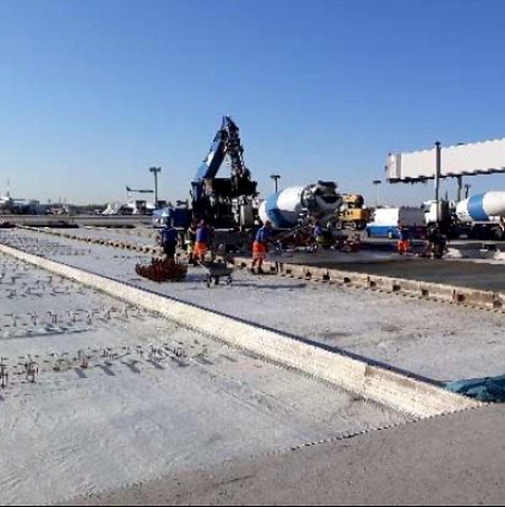
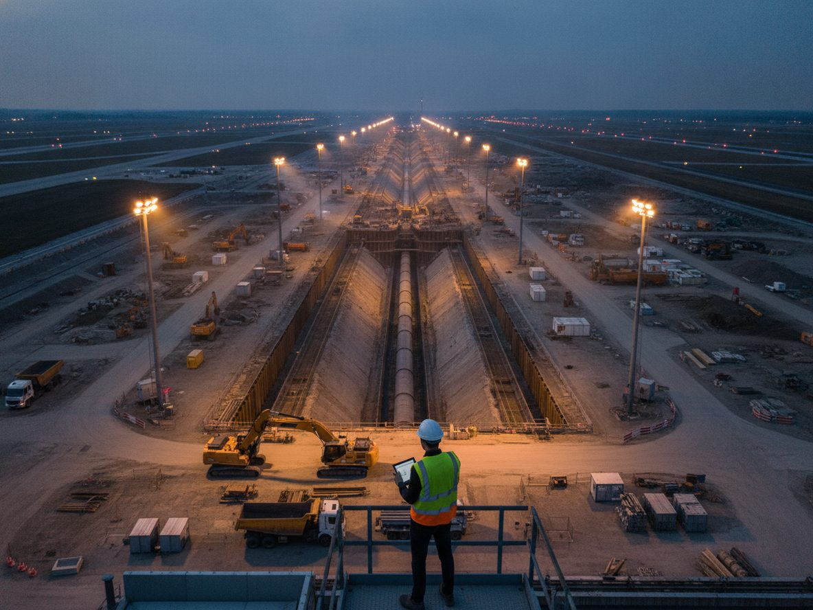
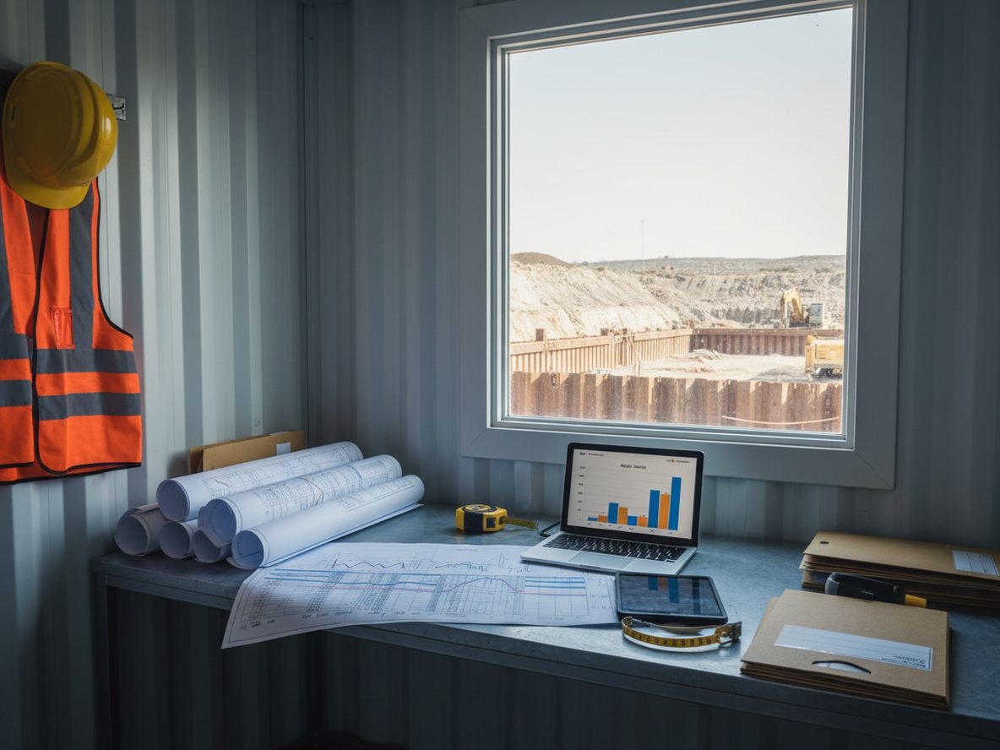
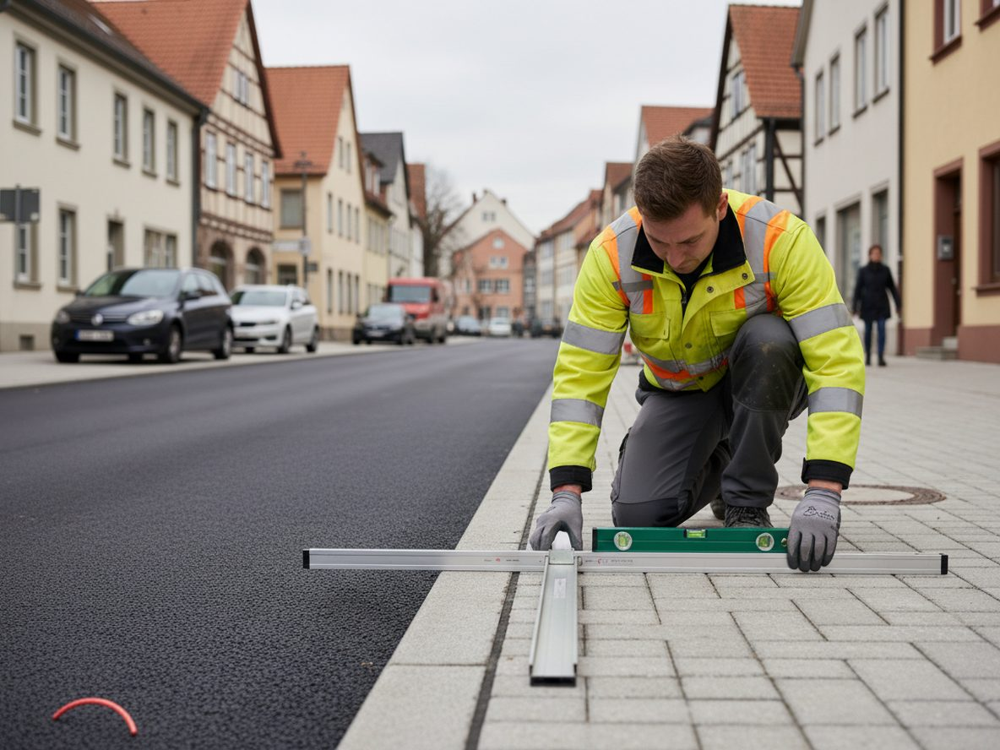

Flughafeninfrastruktur
Rollbahnen, Vorfelder, Kerosin- und Fernwärmetrassen – nachts, in 600-m²-Baufeldern, im Sicherheitsbereich.
BH Infracon ist Ihr kompetenter Partner für alle Aspekte des Baumanagements. Wir kombinieren Ingenieurwissen mit praktischer Erfahrung, um exzellente Ergebnisse zu erzielen. Unser Ziel: Ihre Projekte effizient, kostensparend und qualitativ hochwertig durchzuführen – vom Flughafenvorfeld bis zum kommunalen Straßenbau.

Wir überwachen die Ausführung Ihres Bauvorhabens fachgerecht und unabhängig – auf Grundlage von Leistungsverzeichnis, Plänen und den anerkannten Regeln der Technik. Dazu gehören Aufmaß, Qualitätskontrolle, Terminverfolgung, Baustellendokumentation und die Koordination aller Beteiligten. Besondere Erfahrung bringen wir beim Bauen unter laufendem Betrieb mit: Nachtbaustellen auf Rollbahnen und Vorfeldern, Sicherheitsbereiche, verkehrsreiche Straßen.

Komplexe Bauprojekte erfordern klare Strukturen. Als freiberuflicher Projektsteuerer begleiten wir Straßen- und Tiefbauvorhaben von der Idee bis zur Fertigstellung – mit Erfahrung, Übersicht und dem Blick fürs Wesentliche. Wir organisieren Abläufe, bündeln Informationen, moderieren Schnittstellen zwischen Bauherr, Planern, Behörden und ausführenden Firmen und halten Termine, Kosten und Qualität im Gleichgewicht.
Frühzeitig richtig aufgestellt: Mit gezielter Bauherrenberatung, technischem Consulting und Projektoptimierung helfen wir, Risiken zu minimieren, Kosten zu senken und Projekte nachhaltig erfolgreich zu steuern. Je früher wir einbezogen werden, desto größer der Hebel – bei der Wahl des Bauverfahrens, der Bauzeitenplanung und der Vertragsgestaltung.

Gerade bei komplexen Bauvorhaben unterstützen wir öffentliche und private Auftraggeber durch professionelles Claim Management, laufendes Controlling und prüfsichere Abrechnungen – transparent, sachlich und belastbar. Nachträge werden technisch und vertraglich bewertet, Mehr- und Minderkosten nachvollziehbar dokumentiert und Abrechnungen auf Mengen, Preise und Vertragskonformität geprüft.

Wir begleiten Bauabnahmen im Straßen- und Tiefbau fachkundig und unabhängig. Durch strukturierte Prüfungen, dokumentierte Mängelerfassung und eine zuverlässige Objektbetreuung stellen wir die qualitätsgerechte Ausführung und nachhaltige Nutzung sicher – bis zum Ablauf der Gewährleistung.
Unsere Schwerpunkte liegen dort, wo Bauen besonders anspruchsvoll ist: unter laufendem Betrieb, in Sicherheitsbereichen und in großer Tiefe.
Rollbahnen, Vorfelder, Kerosin- und Fernwärmetrassen – nachts, in 600-m²-Baufeldern, im Sicherheitsbereich.
Asphalt- und Betondecken, Umlegungen unter Verkehr, barrierefreie Haltestellen, Verkehrssicherung.
Pipelines, Kabel- und Fernwärmetrassen, Tunnelvortrieb DN 1400, Start- und Zielgruben im Spundwandverbau.
Neubaugebiete, Rechenzentrums-Campus, Kanal-, Wasser- und Datenleitungen, Lärmschutz, Landscaping.
In einem unverbindlichen Erstgespräch klären wir Leistungsbild, Zeitrahmen und Honorar – gern direkt vor Ort auf der Baustelle.